Github workflow: branch-update-PR
We are going to use Github Desktop for these tasks here. If you are comfortable with command-line git, feel free to use that instead.
The first step is to go to the workshop repository and fork it. This will create a new repository under your user account that is a “mirror” of the original workshop repository.
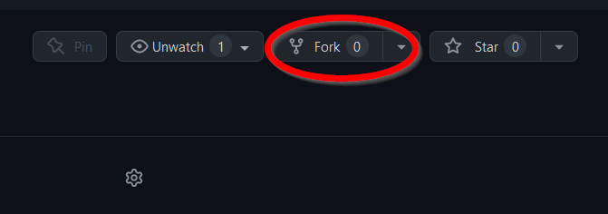
This way, you can work “locally” on your own repository, in your own branch, and when changes are ready to be submitted to the “gold standard” repository you can do that. Right now you should have something like this:
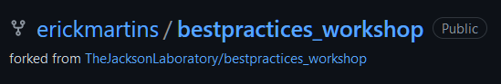
The next step is to create a new branch. Branches are what they sound like: from a codebase, you can “branch” out to try something new, and when that is done you can merge the changes back to the main source code. Even when working on your own fork, it is a good idea to create a new branch for changes you are making.
In this exercise, the only change we are going to make is adding your name to the list of participants on README.md. First off, we are going to clone your fork of the workshop repository to your computer. If you had already cloned the workshop repository with Github Desktop, remove it and make sure to clone your fork.
Go to File -> Clone repository… and then search for “bestpractices”. You should see two of them: the original workshop repo belonging to TheJacksonLaboratory and your fork. Make sure to clone your own fork.
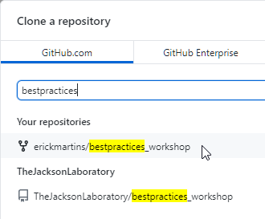
You will be asked if you want to plan to use this fork “to contribute to the parent project” or “for my own purposes”. This is largely what it sounds like: choosing the first one allows you to suggest changes to the parent repository, while the second one would change only your own version of it. Since we want to create a single list of all participants, choose “to contribute to the parent project”.
You now have a local version of the repository on your computer to play with! You can have a look at it by going to Repository -> Show in Explorer.
Our next step is to create a branch where we will make the change to the list of participants. Go to Branch -> New branch. Give it an informative name that describes what the change you’ll be doing is and then click “create branch”:
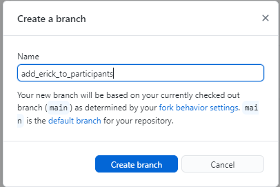
You now should see that your current branch is the one you just created. Right now, it only exists in your computer; to push the new branch to Github, click “Publish Branch”:
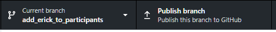
If you go to your forked repository on the Github webpage, you can now see that you have two branches:
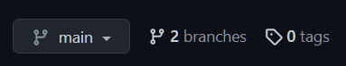
Now, we’ll make the changes we want to make to our branch in our fork. Open README.md from the repository folder you have on your computer and add your name to the list of participants. After you save the file, you should see the list of changes on your Github Desktop window:
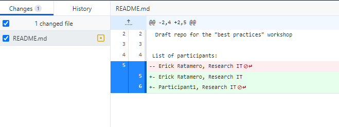
Now we’ll commit these changes. Give the commit a good description that summarizes the change and click “commit to YOURBRANCHNAMEHERE”.
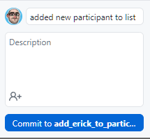
This commit is still stored locally, so make sure to push it to the remote version of your repository hosted on github.
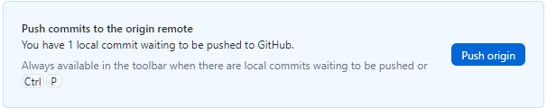
Github Desktop should now give you the option to create a pull request from your current branch. A pull request can be thought of as a “request to change”; you submit your proposed changes to the original repository, and the maintainers of that repository can choose whether to make them the new “standard” or not. Click “Create Pull Request”.
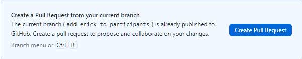
This should open a browser window that will take you to the Github website. It will show you from which branch to which branch that pull request is being created (from your fork and your branch, to the original repository and “main” branch). Here, you have a chance to write a title and a description to your PR. It’s a good idea to make them as descriptive as possible, to make it clear for the maintainers what exactly is being changed and why. In this case I will be pretty minimalistic, but you shouldn’t!
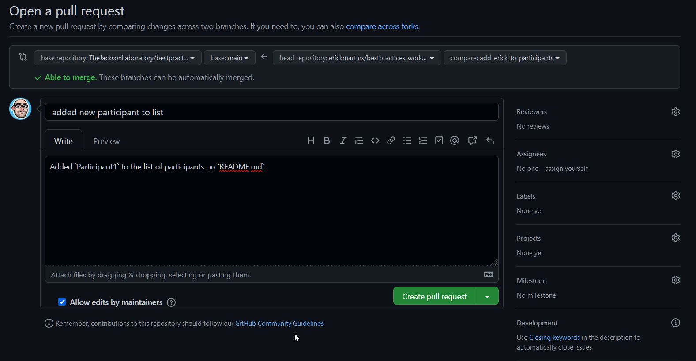
You can see that you’re taken to the main repository belonging to TheJacksonLaboratory, and there is now an open pull request. If you are not a repository maintainer, your work is more or less done at this point – the maintainers will check your PR, and might request changes. When they are happy with those, they will merge your pull request, and it will become the new standard! If you are a maintainer, you might face the dreaded merge conflicts here – sometimes two versions of the same codebase cannot be seamlessly merged and you will need to solve the conflicts by picking which version should take precedence. We will NOT cover these here!